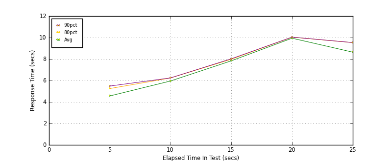
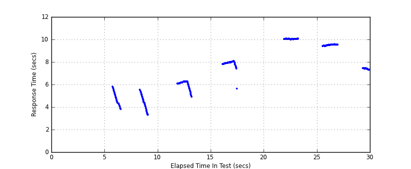
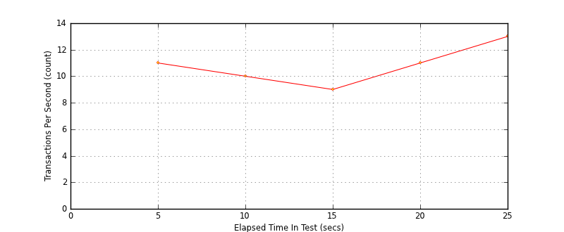

Performance Results Report
Summary
transactions: 388
errors: 0
run time: 30 secs
rampup: 10 secs
test start: 2014-01-17 09:33:24
test finish: 2014-01-17 09:33:48
time-series interval: 5 secs
workload configuration:
| group name | threads | script name |
|---|
| user_group-1 | 100 | read_user.py |
All Transactions
Transaction Response Summary (secs)
| count | min | avg | 80pct | 90pct | 95pct | max | stdev |
|---|
| 388 | 3.290 | 7.448 | 9.535 | 10.026 | 10.035 | 10.054 | 2.044 |
Interval Details (secs)
| interval | count | rate | min | avg | 80pct | 90pct | 95pct | max | stdev |
|---|
| 1 | 59 | 11.80 | 3.290 | 4.559 | 5.248 | 5.483 | 5.639 | 5.797 | 0.676 |
| 2 | 52 | 10.40 | 4.889 | 5.954 | 6.234 | 6.242 | 6.247 | 6.260 | 0.385 |
| 3 | 49 | 9.80 | 5.606 | 7.833 | 7.979 | 8.025 | 8.035 | 8.081 | 0.354 |
| 4 | 59 | 11.80 | 9.404 | 9.942 | 10.038 | 10.044 | 10.049 | 10.054 | 0.212 |
| 5 | 69 | 13.80 | 7.287 | 8.640 | 9.530 | 9.535 | 9.538 | 9.559 | 1.055 |
Graphs
Response Time: 5 sec time-series

Response Time: raw data (all points)

Throughput: 5 sec time-series

Custom Timer: get_tweets
Timer Summary (secs)
| count | min | avg | 80pct | 90pct | 95pct | max | stdev |
|---|
| 288 | 3.290 | 7.448 | 9.535 | 10.026 | 10.035 | 10.054 | 2.044 |
Interval Details (secs)
| interval | count | rate | min | avg | 80pct | 90pct | 95pct | max | stdev |
|---|
| 1 | 59 | 11.80 | 3.290 | 4.559 | 5.248 | 5.482 | 5.639 | 5.795 | 0.676 |
| 2 | 52 | 10.40 | 4.888 | 5.954 | 6.234 | 6.242 | 6.247 | 6.260 | 0.385 |
| 3 | 49 | 9.80 | 5.605 | 7.832 | 7.979 | 8.024 | 8.034 | 8.081 | 0.354 |
| 4 | 59 | 11.80 | 9.403 | 9.942 | 10.038 | 10.044 | 10.048 | 10.054 | 0.212 |
| 5 | 69 | 13.80 | 7.287 | 8.639 | 9.530 | 9.535 | 9.538 | 9.559 | 1.055 |
Graphs
Response Time: 5 sec time-series
Response Time: raw data (all points)
Throughput: 5 sec time-series